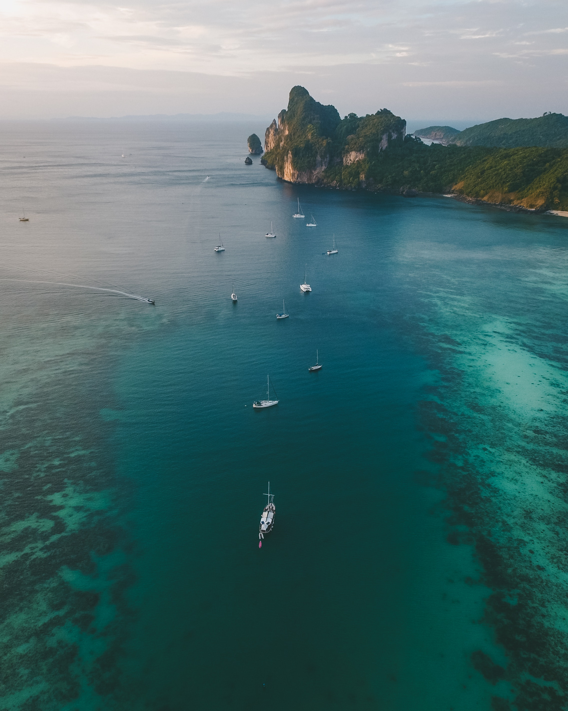

.jpg)
.jpg)


Goa is a state in western India with coastlines stretching along the Arabian Sea. Its long history as a Portuguese colony prior to 1961 is evident in its preserved 17th-century churches and the area’s tropical spice plantations. Goa is also known for its beaches, ranging from popular stretches at Baga and Palolem to those in laid-back fishing villages such as Agonda. Panaji is the state's capital, while Vasco da Gama is its largest city. The historic city of Margão in Goa still exhibits the cultural influence of the Portuguese, who first voyaged to the subcontinent in the early 16th century as merchants
ExploreLadakh is a region administered by India as a union territory and constitutes an eastern portion of the larger Kashmir region that has been the subject of a dispute between India and Pakistan since 1947 and India and China since 1959. Ladakh is bordered by the Tibet Autonomous Region to the east, the Indian state of Himachal Pradesh to the south, both the Indian-administered union territory of Jammu and Kashmir and the Pakistan-administered Gilgit-Baltistan to the west, and the southwest corner of Xinjiang across the Karakoram Pass in the far north.
ExploreLambasingi (or Lammasingi) is a small village in the Eastern Ghats of Chintapalli Mandal of Alluri Sitharama Raju district in the Indian state of Andhra Pradesh. With an altitude that of 1000 m above sea level, the area is cooler than the surrounding plains and is covered in moist deciduous forest cover. There are several coffee, pine, and eucalyptus plantations around the area and some small attempts to grow apple and strawberry. he region was formerly densely covered in forests and known in the past to have supported tigers. The large wildlife in the region includes gaur.
Explore
Araku Valley is a hill station and valley region in the southeastern Indian state of Andhra Pradesh. It's surrounded by the thick forests of the Eastern Ghats mountain range. The Tribal Museum is dedicated to the area's numerous indigenous tribes, known for their traditional Dhimsa dance, and showcases traditional handicrafts. A miniature train runs through Padmapuram Gardens, with its sculptures and tree-top huts.
Explore
Kanyakumari is a coastal town in the state of Tamil Nadu on India's southern tip. Jutting into the Laccadive Sea, the town was known as Cape Comorin during British rule and is popular for watching sunrise and sunset over the ocean. It's also a noted pilgrimage site thanks to its Bagavathi Amman Temple, dedicated to a consort of Shiva, and its Our Lady of Ransom Church, a center of Indian Catholicism.
Explore
Srinigar is a modern waterworld, dominated by Dal Lake and its twisting waterways, tree-lined Nagin Lake, and the Jhelum River. Engulf yourself in local culture by embracing your sea legs and renting one of the wooden boats called shikaras for a daytime or twilight cruise. On land, stroll through the terraced hillsides of the 400-year-old Mughal Gardens, created by Emperor Jehangir for his wife.
Explore